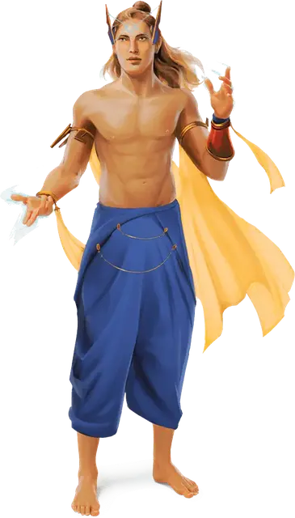

Калаштар
Kalashtar
Средний Гуманоид (Калаштар), любое мировоззрение

Класс Доспеха 12
Хиты 16 (3к8 + 3)
Скорость 30 футов
| мод | спас | ||
|---|---|---|---|
| СИЛ | 12 | +1 | +1 |
| ЛОВ | 14 | +2 | +2 |
| ТЕЛ | 12 | +1 | +1 |
| мод | спас | ||
|---|---|---|---|
| ИНТ | 13 | +1 | +1 |
| МДР | 15 | +2 | +2 |
| ХАР | 15 | +2 | +2 |
Навыки Акробатика +4, Проницательность +4, Убеждение +6
Сопротивление урону психическая энергия
Чувства пассивное Восприятие 12
Языки Общий, Телепатия 20 фт.
Опасность 1/4 (50 опыта)
Бонус мастерства +2
Особенности
Двойственность разума. Калаштар имеет преимущество на спасброски Мудрости.
Действия
Кинжал. Рукопашная или дальнобойная атака оружием: +4 к попаданию, досягаемость 5 футов. или дистанция 20/60 футов., одна цель. Попадание: 4 (1к4 + 2) колющего урона.
Ментальный удар. Калаштар нацеливается на существо, которое видит в пределах 30 футов. Цель должна преуспеть в спасброске Мудрости Сл 12, получая 11 (2к10) урона психической энергией в случае провала.
Описание
Калаштары связаны с добрыми духами куори, которые общаются со своими хозяевами через сны и видения. Они происходят от монахов, которые предлагали свои тела в качестве сосудов для куори, которые спасались от зла Дал-Куора. Теперь калаштары сражаются, чтобы возвестить новую эру света и равновесия.